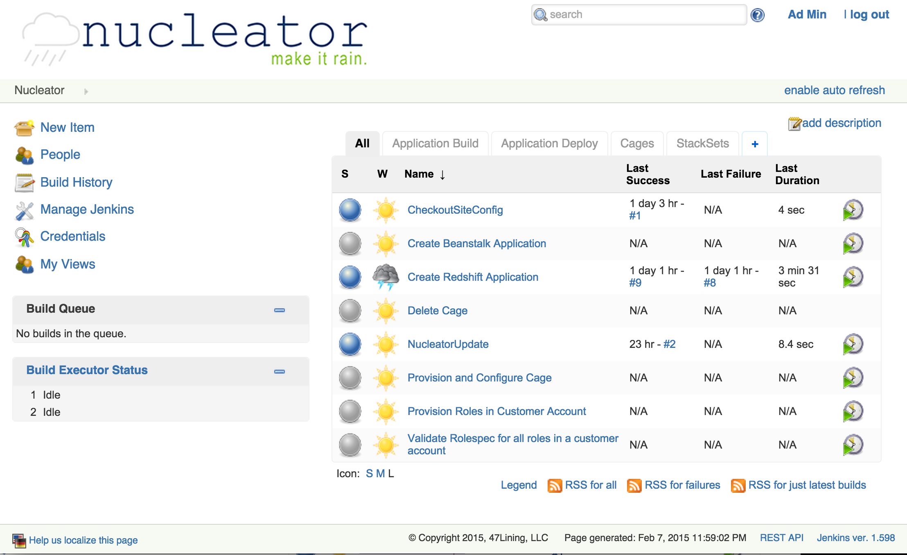

Using the Nucleator User Interface
Using Nucleator from its Secure Home Through the Nucleator User Interface
The Builder Stackset creates three additional machine instances on the Amazon cloud: the nucleator-ui, nucleator, and artifactory. The function of each of these is described in detail below. The nucleator-ui and artifactory machines have user-accessible web interfaces with userids and passwords set in your local credentials file.
The actual work done to configure and provision Cages and Stacksets is accomplished on the machine instance called 'nucleator'. It has Nucleator installed much like you installed it locally in order to get started. This machine is not publicly available other than via an SSH tunnel through the bastion machine. Under normal circumstances you will not need to login to this machine. The Nucleator User Interface uses the same ssh mechanism to run Nucleator commands on the nucleator machine. This architecture provides a secure, easy to use method for provisioning machines for hosting your applications and creating any additional Cages you may want.
The Nucleator User Interface (NUI) is based on an open source project called Jenkins (formerly Hudson). This provides a configurable and flexible mechanism to manage continuous deployments. It retrieves your source code from a Git repository, saves binary artifacts in a repository on the artifactory machine, and deploys your applications to Amazon Beanstalk instances (Stacksets) you created. The projects listed on the NUI dashboard have been pre-build for these requirements. Many of them use the "Build with Parameters" feature which enables you to make choices for the inputs required for the project. These include: which Cage from the site-config to use, which Artifactory version to deploy, etc.
The artifactory machine hosts binary artifacts - pre-built versions of your applications. The web interface is available for you to browse as necessary. This machine runs an open source application called Artifactory.
Accessing the Nucleator User Interface
The Nucleator User Interface is available at https://nucleator-ui.build.47lining.com (assuming the Cage containing your Builder Stackset is named 'build' and the value for customer_domain in your site configuration is '47lining.com'). The NUI contains a number of projects which accomplish various tasks. You will login using the user name and password set in your credentials file (~/.nucleator/<customer>-credentials.yml). It is a security best practice to change the default password and configure Jenkins to require username/password to perform actions. To learn more about security on Jenkins, please read their documentation.
Dashboard
This is the dashboard you will see after logging in and before creating any Cages, Stacksets or deployment environments.

Available Projects
- Nucleator Operations — Some Nucleator User Interface projects operate on Nucleator as a whole
- Checkout the Site Config — Update the Nucleator User Interface's concept of the site configuration
- Nucleator Update — This project updates the Nucleator code on the nucleator machine
- Provision Roles — If a new account is added, the roles need to be provisioned in that account.
- Retrieving a Remote Ssh Config — Retrieve a remotely created ssh config file
- Validate Rolespec — Validate that the Nucleator roles have been provisioned for an account
- Using Cages within the Nucleator User Interface — How to provision, configure and delete cages using the Nucleator User Interface.
- Provision and Configure a Cage — How to provision and configure Cages using the Nucleator User Interface.
- Delete a Cage — How to delete Cages using the Nucleator User Interface.
- Using Stacksets within the Nucleator User Interface — How to create and use projects to interact with Nucleator Stacksets
- Create a Stackset — Nucleator User Interface projects exist to create Stacksets of each known type
- Create a Deployment Environment for an Application — The Nucleator User Interface enables you to create deployment environments and targets for your applications
- Application Build and Deployment Projects — Nucleator's Builder Stackset also provides common, best-practice capabilities that support Continuous Integration and Delivery and that work in concert with other Nucleator Stacksets.
- Delete a Stackset — When a Beanstalk Stackset is created in the Nucleator User Interface, one of the projects created is titled "Delete Beanstalk Container "